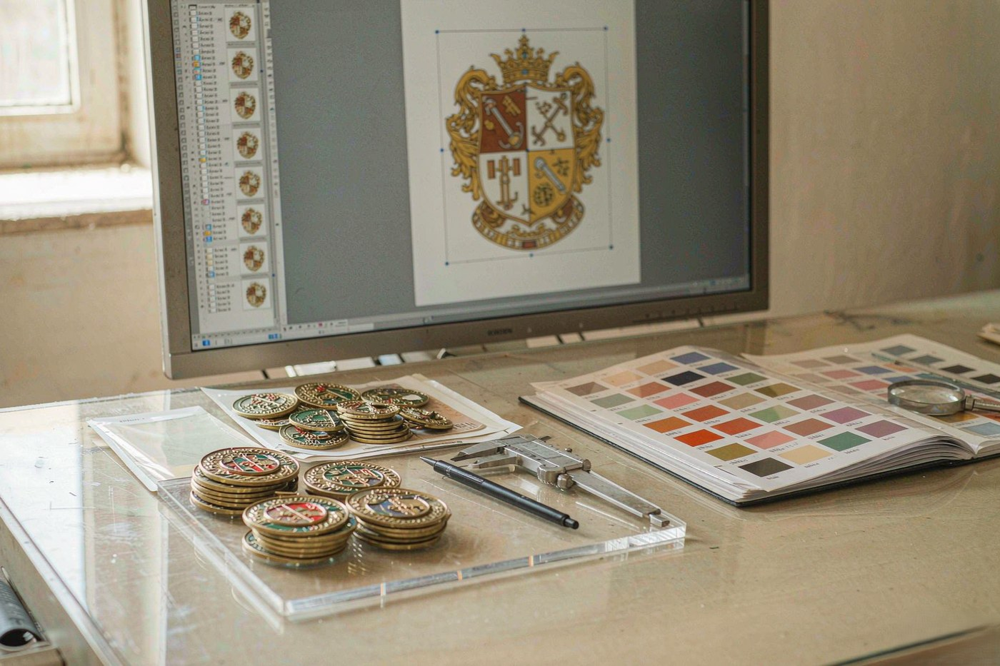
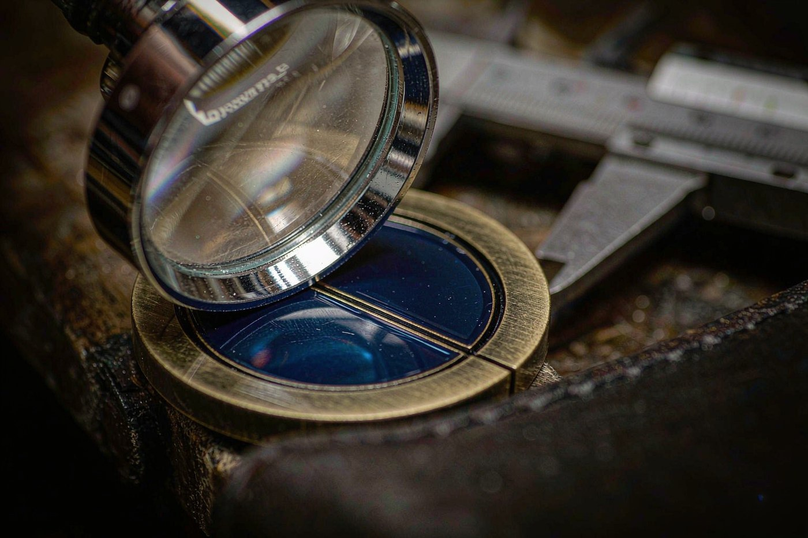
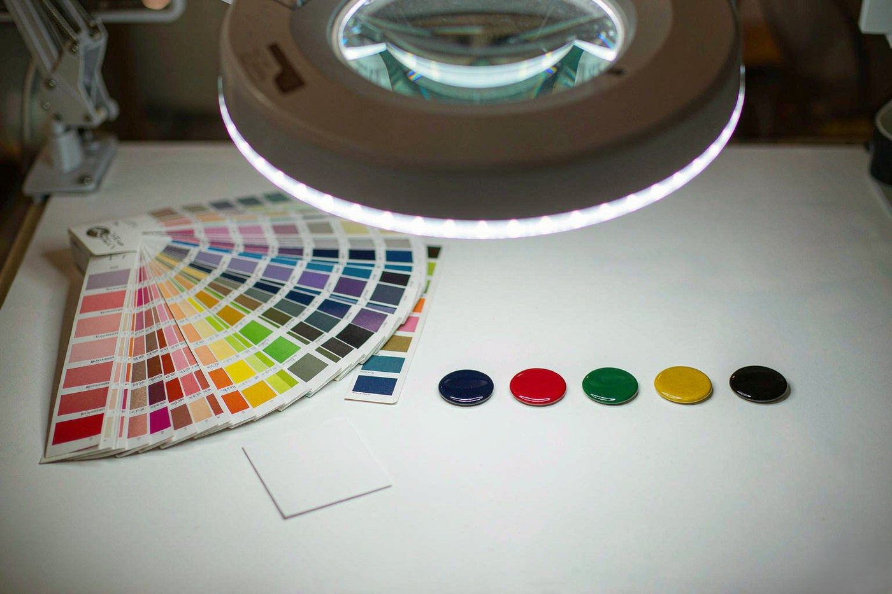

Most delays in a pin order are not factory problems. They are artwork problems. A line so thin it tears in the press. A colour area too small to fill. A gradient that cannot survive enamel. A word set at six point on a twenty-five millimetre badge, which survives the press and then disappears at two metres.
All four are cheap to fix on a screen and expensive to fix after a mould has been cut, because a change of specification after tooling means a new tool. The good news is that every one of these limits can be checked before you send anything, by you, in about two minutes.
This is what the limits are, why they exist, and how to test your own file against them. The numbers come from the same specification sheet our CAD team works from, and none of them are invented to make a process sound fussy.

What we can cut from
The file format decides how many questions we have to ask you before the CAD proof looks like your design. That is the whole difference between the rows below. It is not a question of quality, because we redraw either way.
| File type | Preference | What we need from it |
|---|---|---|
| AI, EPS, PDF | Best | Vector paths, fonts converted to outlines, artwork centred on the artboard. This is what we can cut from directly. |
| SVG | Good | Accepted with the same conditions as a PDF. Converted to outlines on receipt. |
| PNG, JPG, TIFF | Acceptable | 300 dpi at final print size, or higher. Simple artwork in large sizes works well. |
| Photograph of a physical item | Usable | We redraw it. Send several angles if the form is complex. |
| Hand sketch, printout, napkin drawing | Usable | We redraw it and return a vector proof for approval before tooling starts. |
Detailed crests are the usual source of trouble, because a crest carries a lot of small detail in a small circle. Our club and team badge guide covers how to judge whether a crest can actually be cut before you order it, and the five-process comparison shows which process holds that detail best.
Minimum line width
The floor is 0.3 mm, and it comes from the metal rather than from a rule we invented. Our thinnest base metal for enamel and printed work is 0.3 mm brass, 0.3 mm iron or 0.4 mm stainless steel. A metal line narrower than the sheet it is stamped from does not survive the press, it tears.
There is a practical margin on top of that. A 0.3 mm line is physically possible and visually fragile: it reads as a hairline on a worn lapel and it is the first thing to disappear if the plating is slightly heavy. If a design has a critical outline we would rather see it at 0.5 mm.
- 0.3 mm is the absolute minimum for any metal line
- 0.5 mm and above is what we aim for on logos and wordmarks
- Die struck and 3D die cast can hold slightly different geometry, because the relief is formed rather than pierced
The base metal page sets out which metal goes with which process, and why a 0.3 mm stainless steel sheet is not the same thing as a 0.3 mm brass sheet when your design is a hairline.

Minimum colour block
Enamel is poured into a cavity and then ground back. A colour area has to be big enough to be filled and then flattened without disappearing. The practical floor is 0.3 to 0.4 mm for the visible edge of a colour area, with more room required around tight negative shapes.
The place this bites is small text inside a colour panel, and hairline detail that touches a border. A 0.2 mm gap between two colour areas cannot be held reliably, because the enamel on either side moves when it is lapped flat. When two colours meet, allow at least 0.3 mm of bare metal between them.
How large your text has to be
Text is the most common thing to be lost in production, because people judge type by its size on screen rather than by its height on the metal. The rule is simple: text has to be measured as a cap height in millimetres, and that number scales with the pin.
As a working reference, on a 25 mm pin, roughly one inch across, a capital letter should be at least 1.5 mm tall. That is roughly the height of a lowercase letter in 12-point type. Anything smaller than that and the letter survives the press but stops being readable on a lapel.
| Pin diameter | Minimum cap height | Equivalent type size |
|---|---|---|
| 14 to 16 mm | 2.0 mm | About 16 pt on the artwork |
| 18 to 20 mm | 1.7 mm | About 13 pt on the artwork |
| 25 mm (1 inch) | 1.5 mm | About 12 pt on the artwork |
| 30 to 35 mm | 1.2 mm | About 10 pt on the artwork |
| 38 mm and above | 1.0 mm | About 8 pt on the artwork |
Those type sizes assume the artwork is drawn at the pin's actual size. If you are working at a larger scale, scale the number with it: a 50 mm wide artwork needs roughly twice the type height of a 25 mm one. If you have not settled the diameter yet, the lapel pin size guide sets out how each size changes how much detail survives.
What cannot be produced
Three things come up often enough to be worth stating plainly, because they are usually discovered late and they are expensive to discover late.
Gradients in enamel
Enamel is a solid, matched-to-Pantone liquid material. It does not blend. A gradient across a colour area has to be resolved into discrete bands, and on a pin small enough to wear, those bands either show visible steps or disappear entirely. If the artwork needs a gradient, offset printed is the process that can hold it.
Photographic detail below about 1 mm
A photograph on a 25 mm pin gives you a very small image to begin with. Faces and fine textures lose their identity long before the press does anything to them. The honest advice is to simplify toward a shape or a silhouette rather than to increase the resolution of the file.
Sharp corners inside a colour area
Enamel shrinks slightly as it cools and is ground flat on a lapping stone. Acute internal corners are where that movement shows. Radiusing the inside corners of a colour area by a small amount is the single cheapest fix in this list.
Colour references and how many colours you can carry
Hard enamel typically carries up to four Pantone references because the enamel is lapped back to a thin film. Soft enamel typically carries up to six, because the fill is never ground down.
Above those numbers the honest answer is that more colours means a different product rather than a better one. The enamel becomes fragile, the flatness of the surface suffers, and the piece stops looking like the design. The colour count is also one of the variables that moves the quotation, so it is worth fixing early rather than discovering it at the sample stage. The cost factors guide shows where the colour count sits among the other variables you can still change.
Send Pantone codes as text, not as a colour swatch in a photograph, and state whether the reference is coated or uncoated. We hold that standard for the whole run against a calibrated line: 24 dispensing robots fill the cavity the same way every time, and 18 hand-colouring specialists handle the small recesses a needle probe cannot reach. The same standard can be reproduced two years later, which is what stops a reorder arriving a shade off the original.

The pre-flight checklist
Before you send a file, run it against this list. It takes two minutes and it is the difference between a proof that comes back on the first pass and one that comes back with questions attached.
- All strokes converted to outlines, and all text converted to outlines or supplied as fonts
- One compound path per colour area, not overlapping shapes
- No layer effects, no transparency, no clipping masks left active
- Artwork centred on the artboard, and the artboard sized to the intended pin diameter
- Every metal line at 0.3 mm or wider, every colour block at 0.3 mm or wider
- Pantone references written as text, with the coated or uncoated stock specified
- One file per design, named with the design reference rather than a version number
If something on that list is not possible, say so in your message instead of silently working around it. Almost every one of them has a good solution, but the solution changes the specification, and the specification is what your quotation is based on.
How to check your own file in two minutes
None of this needs a supplier. It needs a ruler, and it is worth doing before you write to anyone rather than after.
Print it at actual size. Set the print scale to one hundred percent and put a ruler on the printout. If the badge is twenty-five millimetres wide in the file, it should measure twenty-five millimetres on paper. Art drawn at a larger scale and scaled down later is the single most common reason a line that measures 0.5 mm on screen ends up at 0.2 mm on the badge.
Measure the thinnest line, not the average one. Find the hairlines around a letter or inside a logo and measure those. They are the lines that tear, and they are the lines nobody looks at while judging a design.
Measure the cap height of the smallest letter. If the artwork is at actual size, the table above gives you the floor for that diameter. A letter that is close to the floor will pass the press and still look broken on a lapel.
Look for the two colours that nearly touch. Find the narrowest gap between two colour areas and check it against the 0.3 mm rule. This is the failure that only shows up after the enamel has been lapped flat, when it is too late to change the cavity.
Zoom past one hundred percent and check the corners. Any acute internal corner in a colour area needs a radius. It is the cheapest fix on the list and it takes ten seconds in a vector editor.
If you only have a sketch or a photograph
Send it anyway. A vector file is the fastest route, not the only route. Twelve in-house designers redraw from whatever arrives: a photograph of a physical badge, a logo extracted from a deck, a hand sketch on paper. That work is free and it is folded into the CAD proof you approve before anything is cut.
What we do need is a decision, not a finished file: which of the options in your photograph or sketch is the one you want, and what the piece is supposed to say. A sketch with two possible readings produces two proofs and a week of delay, while a sketch with one clear reading produces one proof and no delay at all.
What to send, and what happens next
Send the artwork, the quantity and the date the pins have to be on. If you have only a photograph of a logo or a sketch on the back of a receipt, send that instead. The artwork is redrawn into a vector proof and returned with a 2D and 3D CAD proof and an itemised quotation within 12 hours. No tooling is charged and no mould is cut until you approve the proof.
That proof is the last cheap moment in the order. It is where you check the line weights, the colour references and the text against the specification above, and it is where changing your mind costs nothing. After the mould is cut, the same change costs a new mould.
From there the sequence is fixed: CAD proof, quotation, sample, production, inspection, packing. The bulk order guide sets out each stage and what it costs in time, and the samples page explains what a sample settles and what it does not.
Artwork questions answered
No. A vector file is the fastest route, not the only route. Twelve in-house designers redraw from whatever arrives: a photograph of a physical badge, a logo pulled out of a presentation, a hand sketch on the back of a receipt. That work is free and it is folded into the CAD proof you approve before anything is cut. What changes is the schedule, not whether we can do it.
0.3 mm is the absolute floor for any metal line, and it comes from the metal rather than from a rule we invented. Our thinnest base metal for enamel and printed work is 0.3 mm brass, 0.3 mm iron or 0.4 mm stainless steel, and a line narrower than the sheet it is stamped from tears in the press. We aim for 0.5 mm and above on logos and wordmarks.
Not in enamel. Enamel is a solid, matched-to-Pantone liquid material and it does not blend. A gradient across a colour area has to be resolved into discrete bands, and on a pin small enough to wear those bands either show visible steps or disappear entirely. Offset printed is the process that holds a gradient, on a stainless steel or brass blank under a clear epoxy dome.
Hard enamel typically carries up to four Pantone references, because the enamel is lapped back to a thin film. Soft enamel typically carries up to six, because the fill is never ground down. Above those numbers more colours means a different product rather than a better one: the enamel becomes fragile and the flatness of the surface suffers.
We tell you before the mould is cut, not after. Detail below about 1 mm loses its identity long before the press does anything to it, so the honest advice is to simplify toward a shape or a silhouette rather than to increase the resolution of the file. A photo on a 25 mm pin is a very small image to begin with.
Yes. Send a PNG at 300 dpi or higher, or the best image you have, and our designers will redraw it into vector paths and return a 2D and 3D CAD proof for you to approve. The redraw is free. The one thing we need from you is a decision rather than a file: which version you want, and what the piece is supposed to say.
It scales with the pin. On a 25 mm pin, roughly one inch across, a capital letter should be at least 1.5 mm tall, which is about the height of a lowercase letter in 12-point type. On a 14 to 16 mm pin the floor is 2.0 mm, and on a 38 mm pin or above it is 1.0 mm. Anything smaller survives the press but stops being readable on a lapel.